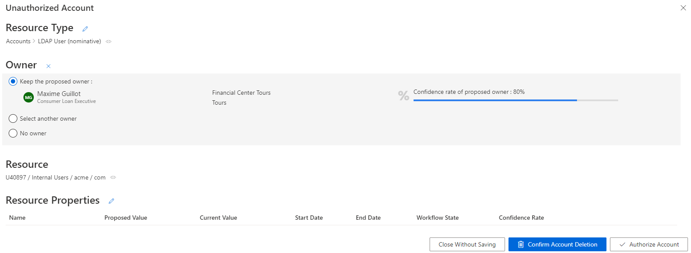

Review an Unauthorized Account
How to remediate unauthorized accounts. The aim is to review the accounts whose assignments don't comply with the rules of the role model.
Overview
Unauthorized accounts are considered as non-conforming assignments because no rule from Identity Manager's model can justify their actual assignment to an identity.
Participants and Artifacts
This operation should be performed in cooperation with application owners in charge of applications' entitlements.
| Input | Output |
|---|---|
| Provision (required) |
Complying accounts |
Review an Unauthorized Account
Review an unauthorized account by proceeding as follows:
-
Ensure that the Compute Role Model Task was launched recently, through the complete job on the Job Execution page:

Or through the connector's overview page, Jobs > Compute Role Model.

-
Get to the Resource Reconciliation page, accessible from the corresponding section on the home page.

-
Select
Unauthorized accountas theWorkflow State. Orphaned accounts appear with no owner.
-
Choose the default resource view or the property view with the top right toggle.
-
Click on the line of an account with an owner.
In the following example, the nominative LDAP account linked to the resource
U40897 / Internal Users / acme / comhas the ownerMaxime Guillotwith an 80% confidence rate.
The displayed confidence rate means that a rule actually assigned the account to the identity, but with a confidence rate too low to imply full automatic assignment. Approval will be required. See the Classify Resources topic for additional information.
The Resource Properties frame shows all the properties of the resources. They can be updated by clicking on the edit button. See the Reconcile a Property topic for additional information.
-
Select the appropriate decision.
Decisions must be made with caution as they cannot be undone.
-
Click on Confirm Account Deletion or Authorize Account according to the previous decision.
-
Trigger the Provision by launching, on the appropriate connector's overview page, Jobs > Generate Provisioning Orders, then, after this first task is done, Jobs > Fulfill.
Use property view
By default, non-conforming assignments are listed by resource. It is possible to click on a resource and then access the list of all unreconciled properties for said resource.

It can be helpful to have the non-conforming assignments regrouped by property, as some of the changes can be similar, so very likely to be validated by the same user. This is why a property view can be enabled by clicking on the Property View toggle at the top right corner.
Once enabled, select a resource type to display all unreconciled properties linked to said resource type. In addition, select a property to display only the unreconciled properties linked to said resource type and property.

The review process is the same with both views. However with property view, reviewers don't click on a given line, but choose a decision directly on the left of the property line.
In addition, using property view enables bulk reconciliation to approve the proposed values or keep the current values for several resources simultaneously.

Bulk keeping non-authorized accounts, by clicking on Bulk Reconcile then Approve Current Values, does not approve their unreconciled properties which will still be displayed on this screen.
Verify Review
In order to verify the process, check that the changes you ordered appear on the corresponding user's View Permissions tab.